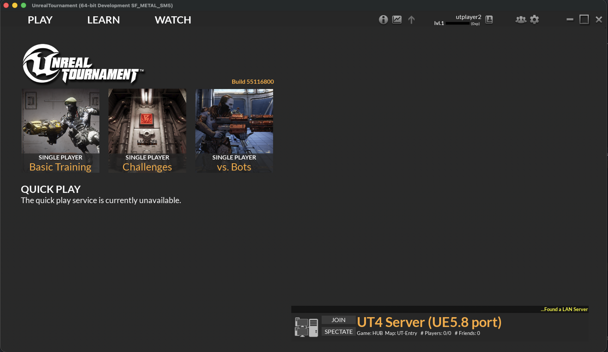
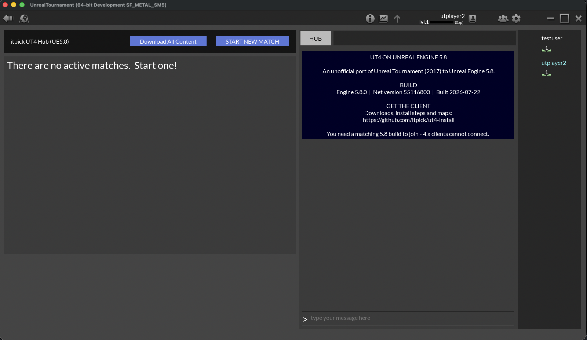
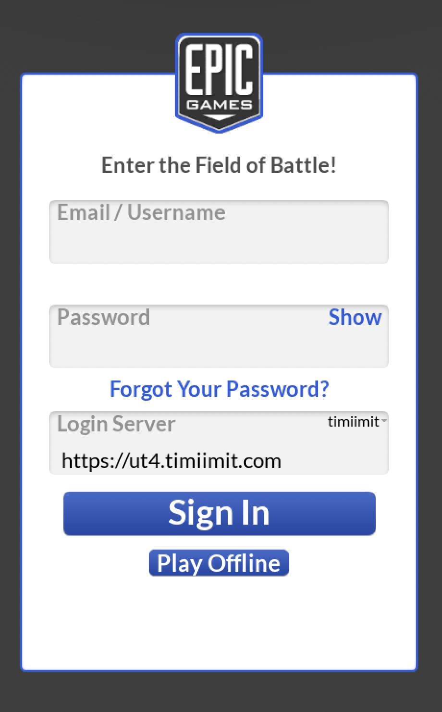

Unreal Tournament, rebuilt on Unreal Engine 5.8 — free.
The classic arena shooter, ported forward to a modern engine. Windows, macOS & Linux.



An unofficial, community-run port of Unreal Tournament (2017) forward from Unreal Engine 4.15 to Unreal Engine 5.8 — client, dedicated server and hubs. Deathmatch, Capture the Flag and Blitz all play end-to-end, with bots, teams, downloadable maps and lobby hubs.
No paywall, no launcher, no account required to play offline. It's free and always will be. The installer grabs the client and the full ~40-map set, so you have every map offline — not just what a hub happens to serve.
The one-click installer downloads a small script that fetches, verifies and unpacks the client and the full map set for you. If you'd rather do it by hand — or the button didn't work — here are the manual routes.
Same thing the button does (auto-detects the split client parts and pulls every map). Add --no-maps to skip the map paks:
# Linux
curl -fsSL https://itpick.github.io/ut4-install/install.sh | bash
# macOS
curl -fsSL https://itpick.github.io/ut4-install/install.command | bash
# Windows (PowerShell)
irm https://itpick.github.io/ut4-install/install.ps1 | iex
# skip the ~40 map paks:
curl -fsSL https://itpick.github.io/ut4-install/install.sh | bash -s -- --no-mapsorasThe client is also published as an OCI artifact on GitHub Container Registry. Install oras, then:
# Linux
oras pull ghcr.io/itpick/ut4-install:linux-5.8
tar -I zstd -xf ut4-client-linux.tar.zst
cd LinuxNoEditor && ./UnrealTournament.sh # add -onethread if it hangs
# macOS (Universal — Intel + Apple Silicon)
oras pull ghcr.io/itpick/ut4-install:mac-5.8
tar -I zstd -xf ut4-client-mac.tar.zst
xattr -dr com.apple.quarantine UnrealTournament.app
codesign --force --deep --sign - --identifier com.itpick.UnrealTournament58 UnrealTournament.app
open UnrealTournament.app
# Windows (Win64)
oras pull ghcr.io/itpick/ut4-install:win64-5.8
tar --zstd -xf ut4-client-win64.tar.zst
.\UnrealTournament.execodesign … --identifier com.itpick.UnrealTournament58 line above re-signs it unsandboxed — that's exactly what the one-click installer does. Do not add an --entitlements file containing app-sandbox.
Full docs — signing in, running your own hub, ports, downloadable maps — are in the README.